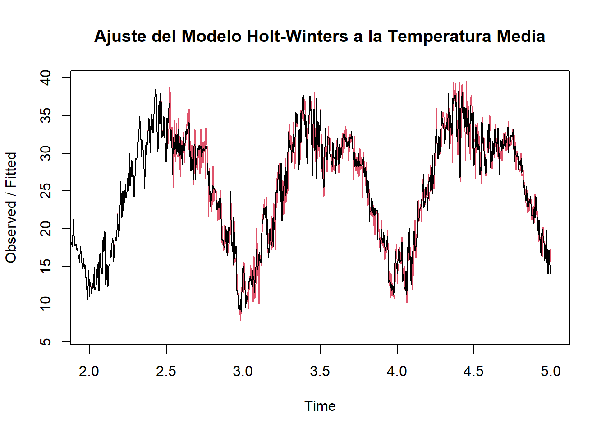
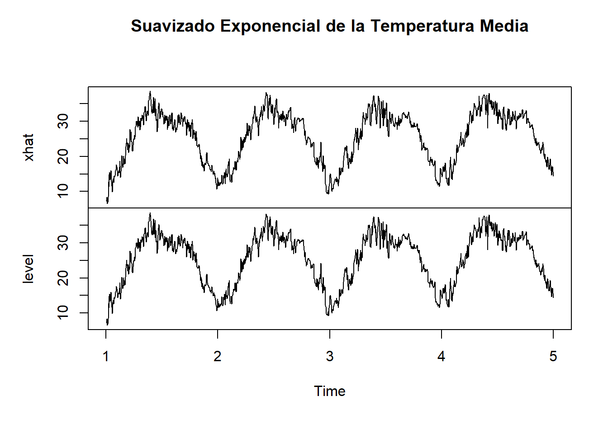

Chapter 5 Modulo 2 - Unidad 1
5.1 Modelo Holt-Winters
Holt-Winters: Es un método de suavizado exponencial que es especialmente útil para datos con tendencias y estacionalidad. Holt-Winters puede aplicar suavizado tanto a la tendencia como a la componente estacional de la serie, haciendo que sea una opción robusta para prever futuros valores en series que exhiben patrones estacionales claros.
5.2 Aplicación del modelo Holt-Winters
# Asegurarse de que los datos están en formato de serie temporal
ts_data <- ts(data$meantemp, frequency = 365)
# Aplicar el modelo Holt-Winters
hw_model <- HoltWinters(ts_data)
# Ver los componentes del modelo
hw_model## Holt-Winters exponential smoothing with trend and additive seasonal component.
##
## Call:
## HoltWinters(x = ts_data)
##
## Smoothing parameters:
## alpha: 0.712403
## beta : 0
## gamma: 1
##
## Coefficients:
## [,1]
## a 2.319633e+01
## b 7.872313e-04
## s1 -1.195469e+01
## s2 -1.157477e+01
## s3 -1.189888e+01
## s4 -1.245721e+01
## s5 -1.310752e+01
## s6 -1.326375e+01
## s7 -1.208723e+01
## s8 -1.199584e+01
## s9 -1.215290e+01
## s10 -1.134219e+01
## s11 -1.063063e+01
## s12 -1.092086e+01
## s13 -1.219456e+01
## s14 -1.180972e+01
## s15 -1.196843e+01
## s16 -1.235023e+01
## s17 -1.124597e+01
## s18 -1.055856e+01
## s19 -1.067440e+01
## s20 -1.024761e+01
## s21 -8.309229e+00
## s22 -1.096474e+01
## s23 -1.152895e+01
## s24 -9.994342e+00
## s25 -8.290335e+00
## s26 -8.736116e+00
## s27 -8.455078e+00
## s28 -9.045764e+00
## s29 -1.012463e+01
## s30 -1.039229e+01
## s31 -9.420529e+00
## s32 -8.366429e+00
## s33 -6.253336e+00
## s34 -8.076706e+00
## s35 -6.036839e+00
## s36 -5.303574e+00
## s37 -7.564586e+00
## s38 -9.732440e+00
## s39 -1.122729e+01
## s40 -1.088013e+01
## s41 -1.146172e+01
## s42 -1.065473e+01
## s43 -1.029592e+01
## s44 -1.141832e+01
## s45 -1.082676e+01
## s46 -9.913657e+00
## s47 -9.382281e+00
## s48 -8.114674e+00
## s49 -8.403294e+00
## s50 -8.975964e+00
## s51 -8.293498e+00
## s52 -8.199578e+00
## s53 -7.941686e+00
## s54 -6.955911e+00
## s55 -7.021570e+00
## s56 -6.733565e+00
## s57 -7.443398e+00
## s58 -8.637969e+00
## s59 -8.462186e+00
## s60 -7.963377e+00
## s61 -6.498743e+00
## s62 -5.338018e+00
## s63 -6.563367e+00
## s64 -6.845626e+00
## s65 -5.246495e+00
## s66 -4.244918e+00
## s67 -4.269443e+00
## s68 -3.611318e+00
## s69 -3.907982e+00
## s70 -4.750003e+00
## s71 -4.986526e+00
## s72 -5.319777e+00
## s73 -2.322169e+00
## s74 -4.925522e-02
## s75 8.372728e-01
## s76 -1.037939e+00
## s77 -1.801291e+00
## s78 -1.506442e+00
## s79 -6.686584e-01
## s80 -1.719594e+00
## s81 -1.442301e+00
## s82 -7.588102e-02
## s83 1.025415e+00
## s84 -1.877713e+00
## s85 -4.877644e-01
## s86 -1.572892e-01
## s87 -2.777887e-01
## s88 5.249710e-01
## s89 5.716539e-01
## s90 1.915118e+00
## s91 7.865255e-01
## s92 2.952350e-01
## s93 1.743353e+00
## s94 3.898458e+00
## s95 2.882510e+00
## s96 1.888208e+00
## s97 1.357495e+00
## s98 2.157926e+00
## s99 3.400561e+00
## s100 2.377283e+00
## s101 2.562383e+00
## s102 3.459140e+00
## s103 4.489461e+00
## s104 3.053055e+00
## s105 3.362408e+00
## s106 1.388409e+00
## s107 1.465035e+00
## s108 1.867087e+00
## s109 2.461422e+00
## s110 3.399939e+00
## s111 3.783056e+00
## s112 4.018884e+00
## s113 4.808762e+00
## s114 5.693569e+00
## s115 6.603767e+00
## s116 6.714350e+00
## s117 7.439763e+00
## s118 8.216113e+00
## s119 8.687626e+00
## s120 9.526008e+00
## s121 9.315093e+00
## s122 7.170761e+00
## s123 5.841221e+00
## s124 4.872402e+00
## s125 6.629670e+00
## s126 6.963816e+00
## s127 6.932253e+00
## s128 5.441242e+00
## s129 5.036422e+00
## s130 3.410542e+00
## s131 1.609871e+00
## s132 2.378316e+00
## s133 3.001762e+00
## s134 5.285467e+00
## s135 5.944281e+00
## s136 6.878642e+00
## s137 6.536716e+00
## s138 6.578501e+00
## s139 7.928812e+00
## s140 8.038210e+00
## s141 9.451640e+00
## s142 6.484403e+00
## s143 6.856727e+00
## s144 6.111842e+00
## s145 6.657983e+00
## s146 8.681108e+00
## s147 8.920022e+00
## s148 6.900289e+00
## s149 7.634960e+00
## s150 8.897070e+00
## s151 9.438101e+00
## s152 9.331298e+00
## s153 1.038620e+01
## s154 1.162029e+01
## s155 1.173672e+01
## s156 1.297900e+01
## s157 1.308622e+01
## s158 1.374661e+01
## s159 1.266621e+01
## s160 1.253455e+01
## s161 9.437540e+00
## s162 6.933846e+00
## s163 5.162707e+00
## s164 6.742918e+00
## s165 1.042556e+01
## s166 1.127503e+01
## s167 1.071513e+01
## s168 1.129895e+01
## s169 1.148301e+01
## s170 9.851207e+00
## s171 1.089466e+01
## s172 8.912354e+00
## s173 9.717955e+00
## s174 7.114106e+00
## s175 7.591376e+00
## s176 9.037957e+00
## s177 9.887219e+00
## s178 7.478243e+00
## s179 8.684107e+00
## s180 7.577479e+00
## s181 5.404595e+00
## s182 4.116017e+00
## s183 6.707146e+00
## s184 8.632632e+00
## s185 6.462305e+00
## s186 6.557913e+00
## s187 7.021661e+00
## s188 4.957404e+00
## s189 5.173744e+00
## s190 5.574955e+00
## s191 4.977560e+00
## s192 5.735352e+00
## s193 6.451062e+00
## s194 6.998519e+00
## s195 6.210912e+00
## s196 4.496770e+00
## s197 5.297365e+00
## s198 5.908713e+00
## s199 6.016901e+00
## s200 5.591932e+00
## s201 4.975991e+00
## s202 5.472036e+00
## s203 4.750756e+00
## s204 4.229178e+00
## s205 4.826417e+00
## s206 4.494842e+00
## s207 4.974486e+00
## s208 6.046700e+00
## s209 5.708358e+00
## s210 5.466025e+00
## s211 5.819950e+00
## s212 5.787844e+00
## s213 7.518671e+00
## s214 7.603346e+00
## s215 6.495718e+00
## s216 5.253658e+00
## s217 3.059439e+00
## s218 4.288856e+00
## s219 3.010025e+00
## s220 3.227735e+00
## s221 4.335103e+00
## s222 4.256289e+00
## s223 5.894430e+00
## s224 5.491718e+00
## s225 3.566404e+00
## s226 3.659858e+00
## s227 3.381038e+00
## s228 2.753046e+00
## s229 3.795783e+00
## s230 4.060335e+00
## s231 3.549052e+00
## s232 3.516280e+00
## s233 4.997474e+00
## s234 6.045918e+00
## s235 5.706269e+00
## s236 6.750107e+00
## s237 6.988058e+00
## s238 5.971020e+00
## s239 6.612678e+00
## s240 4.482280e+00
## s241 4.430871e+00
## s242 4.208753e+00
## s243 5.836651e+00
## s244 7.526637e+00
## s245 7.297320e+00
## s246 6.936767e+00
## s247 6.645044e+00
## s248 6.759406e+00
## s249 5.945298e+00
## s250 5.864340e+00
## s251 4.844402e+00
## s252 5.152305e+00
## s253 6.165779e+00
## s254 6.828819e+00
## s255 6.703319e+00
## s256 6.505129e+00
## s257 6.465649e+00
## s258 5.379394e+00
## s259 5.154996e+00
## s260 5.019156e+00
## s261 4.483397e+00
## s262 3.475461e+00
## s263 3.177901e+00
## s264 2.879415e+00
## s265 4.683187e+00
## s266 4.833675e+00
## s267 4.503958e+00
## s268 4.465080e+00
## s269 4.872840e+00
## s270 4.694501e+00
## s271 3.677789e+00
## s272 3.313614e+00
## s273 3.914784e+00
## s274 4.500090e+00
## s275 2.960417e+00
## s276 2.094104e+00
## s277 2.930222e+00
## s278 4.843260e+00
## s279 4.518023e+00
## s280 4.823248e+00
## s281 5.011130e+00
## s282 2.418600e+00
## s283 1.890985e+00
## s284 2.328104e+00
## s285 2.134009e+00
## s286 1.624868e+00
## s287 9.924225e-01
## s288 2.185387e+00
## s289 1.855754e+00
## s290 1.379171e+00
## s291 8.676454e-01
## s292 4.814964e-01
## s293 9.690610e-01
## s294 1.192537e+00
## s295 1.504436e-01
## s296 9.399583e-02
## s297 -1.053871e+00
## s298 -1.702948e+00
## s299 -2.784818e+00
## s300 -2.240614e+00
## s301 -1.778886e+00
## s302 -1.779651e+00
## s303 -1.464158e+00
## s304 -1.791107e+00
## s305 -2.618484e+00
## s306 -2.442527e+00
## s307 -4.552580e+00
## s308 -4.812472e+00
## s309 -4.536063e+00
## s310 -4.660827e+00
## s311 -5.161019e+00
## s312 -6.377390e+00
## s313 -6.643872e+00
## s314 -6.987543e+00
## s315 -7.159562e+00
## s316 -6.802286e+00
## s317 -7.272145e+00
## s318 -7.890414e+00
## s319 -8.767643e+00
## s320 -8.041172e+00
## s321 -7.232613e+00
## s322 -6.542820e+00
## s323 -6.003387e+00
## s324 -6.444909e+00
## s325 -6.726525e+00
## s326 -5.963891e+00
## s327 -5.103291e+00
## s328 -2.771116e+00
## s329 -3.875886e+00
## s330 -4.741931e+00
## s331 -5.776350e+00
## s332 -6.023531e+00
## s333 -6.624322e+00
## s334 -6.673687e+00
## s335 -6.385024e+00
## s336 -6.437997e+00
## s337 -8.244354e+00
## s338 -8.255823e+00
## s339 -8.286407e+00
## s340 -8.089005e+00
## s341 -8.725709e+00
## s342 -6.921447e+00
## s343 -8.753479e+00
## s344 -7.857191e+00
## s345 -8.129776e+00
## s346 -8.141807e+00
## s347 -8.473298e+00
## s348 -8.679570e+00
## s349 -1.053807e+01
## s350 -9.718053e+00
## s351 -9.850199e+00
## s352 -8.997542e+00
## s353 -8.857844e+00
## s354 -9.942817e+00
## s355 -9.979833e+00
## s356 -1.096538e+01
## s357 -1.029914e+01
## s358 -1.167875e+01
## s359 -1.041947e+01
## s360 -1.192385e+01
## s361 -1.271448e+01
## s362 -1.332180e+01
## s363 -1.214947e+01
## s364 -1.074042e+01
## s365 -1.319633e+01Aplicación del Modelo Holt-Winters a la Serie Temporal de Temperatura Media
En esta sección del análisis, he aplicado el modelo de suavizado exponencial Holt-Winters a la serie temporal de temperatura media para capturar tanto la tendencia como la estacionalidad inherentes a los datos. El modelo Holt-Winters es particularmente adecuado para datos con patrones estacionales y tendencias, lo cual es característico de las series temporales climáticas.
Configuración del Modelo
El modelo se configuró con los siguientes parámetros de suavizado:
Alpha (α) = 0.712403: Este parámetro controla el nivel de suavizado de la serie y está configurado para adaptarse rápidamente a los cambios en el nivel de los datos.
Beta (β) = 0: Decidí no aplicar suavizado adicional a la tendencia de la serie, ya que los datos han mostrado una tendencia relativamente estable a lo largo del tiempo.
Gamma (γ) = 1: Este parámetro está configurado para permitir una adaptación completa y rápida a los cambios estacionales, esencial para manejar la significativa variabilidad estacional observada en los datos de temperatura.
Resultados del Modelo
El modelo Holt-Winters se ajustó a los datos con los siguientes componentes resultantes:
Nivel (a): El nivel estimado al final del período modelado es aproximadamente 23.2, indicando el punto de partida ajustado para la temperatura media.
Tendencia (b): La tendencia estimada es muy pequeña (aproximadamente 0.000787), lo que sugiere cambios mínimos en la tendencia de la temperatura a lo largo del tiempo.
Componentes Estacionales (s1 a s365): Estos coeficientes reflejan las variaciones estacionales diarias a lo largo del año, ajustando la predicción para cada día específico en base a patrones estacionales pasados.
- Justificación del Modelo
La elección del modelo Holt-Winters se justifica por la clara presencia de una estacionalidad y una tendencia en la serie temporal. Dado que la temperatura media varía a lo largo del año y muestra una tendencia general mínima pero estable, este modelo proporciona una herramienta robusta para hacer predicciones futuras. La capacidad del modelo para ajustar y adaptarse tanto a la tendencia como a la estacionalidad es crucial para prever con precisión en contextos donde los patrones estacionales son significativos y donde la tendencia puede ser sutil pero importante a largo plazo.
- Visualización y Evaluación
Para evaluar la efectividad del modelo, visualicé los ajustes del modelo en comparación con los datos observados. Esta visualización ayuda a confirmar que el modelo capta adecuadamente tanto la tendencia general como los patrones estacionales. Además, planeo calcular métricas de error como el RMSE para cuantificar objetivamente la precisión del modelo.
5.3 Visualización de los ajustes del modelo
# Visualizar los ajustes
plot(hw_model, main="Ajuste del Modelo Holt-Winters a la Temperatura Media")
Análisis del Modelo Holt-Winters en la Temperatura Media
Como se puede ver en la gráfica, tenemos nuestros datos observados en negro y las estimaciones del modelo en rojo.
Lo que Podemos Ver del Modelo
Seguimiento de los Patrones: El modelo hace un gran trabajo siguiendo los altibajos de los datos reales. Esto muestra que el modelo puede capturar bien tanto la tendencia como los patrones estacionales de la temperatura.
Respuesta Rápida: El modelo se adapta rápidamente a los cambios bruscos. Esto es crucial, especialmente cuando estamos tratando con variables climáticas que pueden cambiar rápidamente.
5.4 Suavizamiento exponencial
# Aplicar suavizamiento exponencial simple
smoothed_data <- HoltWinters(ts_data, beta=FALSE, gamma=FALSE)
# Visualización de la serie suavizada
plot(smoothed_data$fitted, main="Suavizado Exponencial de la Temperatura Media")
Suavizado Exponencial de la Temperatura Media
La gráfica muestra el resultado del suavizado exponencial aplicado a la serie temporal de la temperatura media. Este método ha sido implementado utilizando el modelo Holt-Winters con parámetros específicos para minimizar la influencia de la tendencia y la estacionalidad en el suavizado.
Características del Suavizado
Nivel Único de Suavizado: Al configurar beta=FALSE y gamma=FALSE, el modelo se centra exclusivamente en el suavizado del nivel de la serie. Esto resulta en una serie más suave que refleja las variaciones generales de la temperatura sin ajustarse a las fluctuaciones estacionales o de tendencia específicas.
Comparación de Niveles: La gráfica superior muestra la serie temporal original con las estimaciones de nivel superpuestas, proporcionando una visión clara de cómo el suavizado alinea los datos a lo largo del tiempo. La gráfica inferior muestra estos niveles de forma más aislada, destacando la suavidad de la serie resultante.
Justificación del Método
El uso de suavizado exponencial simple en este contexto se justifica por la necesidad de obtener una visión más general de la tendencia central de la temperatura sin las fluctuaciones menores que podrían ocultar patrones más amplios. Este enfoque es particularmente útil para:
Análisis a Largo Plazo: Facilitar la identificación de cambios a largo plazo en la temperatura media, útil para estudios climáticos y planificación ambiental.
Reducción de Ruido: Minimizar el impacto de variaciones estacionales y otros ruidos, haciendo que la serie sea más manejable para análisis que no requieren una granularidad fina.
Evaluación y Observaciones
La evaluación visual sugiere que el suavizado ha sido efectivo para proporcionar una representación clara y continua de la tendencia central de los datos. Sin embargo, es importante considerar que este método puede ocultar detalles importantes necesarios para algunos tipos de análisis específicos. Por ello, se recomienda usar este enfoque cuando se busque una perspectiva general y no se necesiten detalles de fluctuaciones a corto plazo.